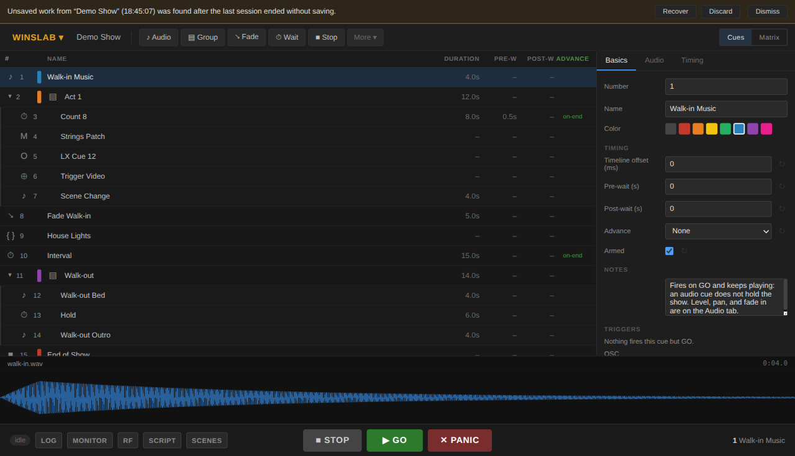

Your first show
Ten minutes, start to finish: install it, look at a show that already works, then build a small one of your own and save it.
1. Install
macOS
Download .dmg
Cuerunner is distributed outside the app stores: the
release notes name
whether a build is signed. Windows warns when an unsigned installer is run, and macOS
warns about an unidentified developer at first launch. Downloads come from
pub.cuerunner.app, and these links are the newest release's files. A Linux
AppImage is published too, and is experimental, with a
.deb for Debian and Ubuntu
beside it. Once installed, Cuerunner offers each new version itself — see
Updates.
SHA256SUMS carries the SHA-256 digest of each file the release serves, so a download can be checked against the release that describes it.
2. Open the demo
Cuerunner ▾ → Open Demo Workspace. It is a real show: audio, a group with a count-in, MIDI and OSC cues, a network cue, a script cue and a fade, with its own sound files — and, on the console's own faders, two scenes already built: Act One and Wedding, four strips each, so the Scenes view has a show in it the moment it is opened. Nothing you do to it touches a file of yours — it opens unsaved, so Save As… makes it yours if you want to keep it.

Press Space. The first cue plays, and the bar at the top moves on to the next one.
- The bar under the toolbar answers the two questions asked mid-show: what is playing, and what GO will fire next. Each side shows the cue's number, its name and the first line of its notes.
- The cue list is the running order. One row per cue.
- The inspector on the right is the selected cue's settings. Its tabs change with the type of cue.
- The dock along the bottom shows one panel at a time: the selected cue, the run log, and the other panels.
- STOP and GO are the transport. Panic is Shift + Esc, and in the Playback menu.
3. Make one of your own
- Cuerunner ▾ → New, then double-click the name in the toolbar and call it something. The dock along the bottom opens folded away — a show with no cues in it has nothing for that panel to show, so the list has the room until something is in it. Any tab along the bottom opens it, and it stays where you leave it.
- Drag your audio files onto the cue list. One cue per file, named after the file, in the order you dropped them. Or press Audio in the toolbar and pick a file with Browse: the cue takes the file's name unless you have already named it, and until it has a file its row reads no file.
- Select a cue and look at the inspector. On Basics, give it a number you will recognise in a running order and write a note to yourself — the note shows up in the bar at the top when the cue is next, which is where you will actually read it.
- Press GO to hear it. STOP stops everything.
- Save with Ctrl/⌘ + S. Cuerunner writes a
.cuerunnerfile, which holds the cues and the show's setup but not the audio itself. A show you have not named yet takes the file's name; one you have keeps its own, whatever the file is called.
The show file points at your audio where it sits on disk. Moving a show to another
machine means taking the sound with it — see
the workspace file for how to keep the
links intact.
Next
Building a cue list covers groups, waits, fades and the timing that makes a run of cues fire itself. Running the show is what to do on the night.